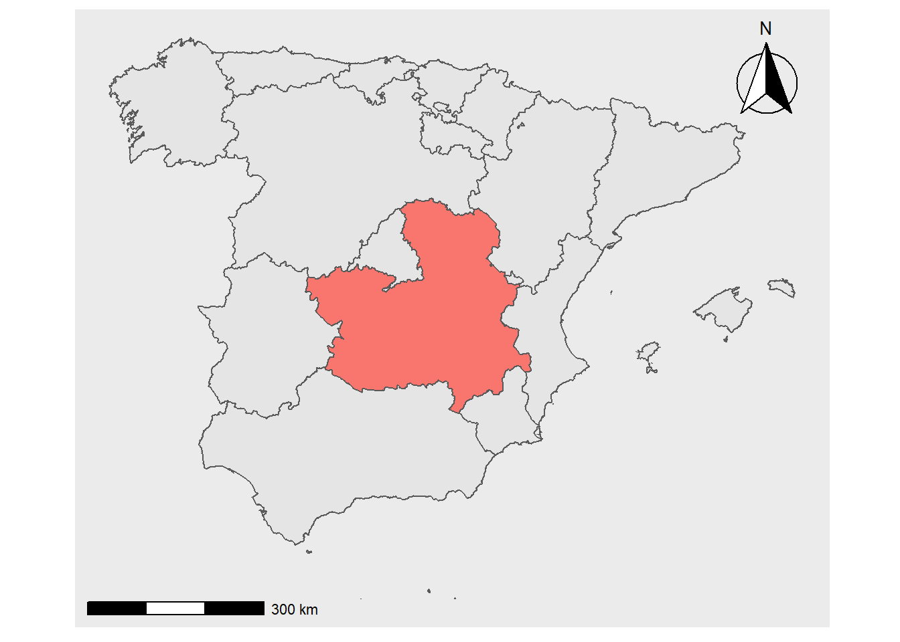
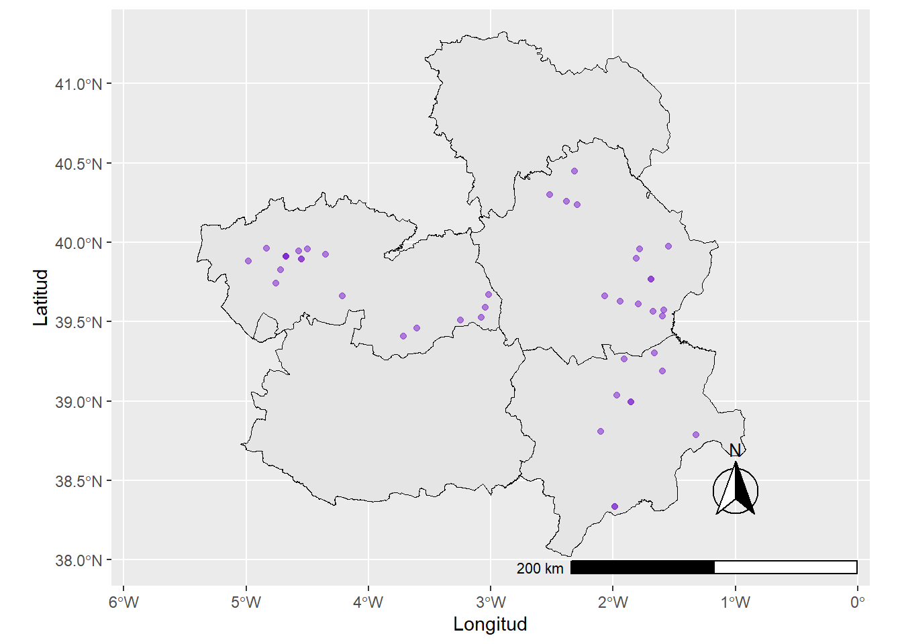

Empezamos cargando las librerías que utilizaremos.
library(tidyverse)
library(sf)
library(ggspatial)
library(readxl)
library(writexl)
library(sf)
library(tidygeocoder)El primer mapa que crearemos será un mapa de las macrogranjas existentes en CLM en 2019.
Primeramente, importamos un excel que contiene las granjas porcinas con al menos 2000 cabezas. Es un excel creado a partir del Censo Porcino de CLM. Lo creé en base a datos de la Junta.
villages_macrogranjas <- read_excel("data/porcino +2000.xlsx")Segundamente, importamos un shapefile con datos geoespaciales de Castilla-La Mancha (CLM). Un shapefile es un tipo de archivo con información georeferenciada que nos permite, entre otras cosas, dibujar mapas en un ordenador.
CLM_provinces <- st_read("data/Provincias.shp") ## Reading layer `Provincias' from data source
## `C:\Victor\Ecologia Politica\ecologia politica paper\Página web\luchando_contra_futuras_zoonosis\data\Provincias.shp'
## using driver `ESRI Shapefile'
## Simple feature collection with 5 features and 7 fields
## Geometry type: MULTIPOLYGON
## Dimension: XY
## Bounding box: xmin: -5.405995 ymin: 38.02244 xmax: -0.9159556 ymax: 41.32763
## Geodetic CRS: WGS 84Para nuestro siguiente paso tenemos que “limpiar” nuestros datos. Como varios pueblos contienen artículos en sus nombres (ex: El Bonillo), vamos a usar la siguiente línea de código para separar el nombre de los pueblos con artículos en dos. Tendremos una columna que contendrá el artículo y otra el municipio sin artículo.
villages_macrogranjas_municipality_split <- villages_macrogranjas %>%
separate(Municipio,c("MUNICIPIO","ARTICULO"),sep=",")Como el lector/la lectora habrá podido observar, el excel con el que estamos trabajando no cuenta con coordenadas. Esto es un problema a la hora de crear un mapa. Afortunadamente, podemos usar el siguiente código para geocodificar automáticamente los pueblos donde existe(n), al menos, una granja con 2000 o más cabezas de porcino. Para realizar la geodificación, estamos solicitando acceso a los datos de Open Street Maps.
villages_geocoded <- villages_macrogranjas_municipality_split %>%
geocode("MUNICIPIO", method = 'osm', lat = latitude , long = longitude, min_time=2)Ahora sólo tenemos que representar la información en un mapa. El código que utilizamos para ello no es muy complejo, pero incluye varios pasos. Cada paso está explicado dentro del código.
CLM_provinces %>% #Aquí le pedimos a R que use como su fuente de datos geospaciales
# "CLM_provinces", el shapefile con datos sobre las provincias de CLM.
ggplot(aes("gray33"))+ #Aquí le pedimos que use una tonalidad específica de gris para el fondo.
geom_sf(color = "black", size = 0.1) + #Aquí le pedimos que dibuje las líneas provinciales en negro
geom_point(data=villages_geocoded, aes(x=longitude, y=latitude, size=Animales, colour="pink", alpha=0.01)) + #Aquí le pedimos que, encima del mapa de las provincias que hemos creado usando CLM_provinces, dibuje
# un mapa de puntos con información procedente de "villages_geocoded". Que las coordenadas X de
# "villages_geocoded" están en la fila "longitude" y las Y en la fila "latitude". Después,
# especificamos que queremos que el tamaño de los puntos varié según el valor asignado a cada
# punto en la columna "Animales". Finalmente, le decimos que queremos que los puntos sean de color
# rosa y transparentes.
annotation_scale(location = "br", width_hint = 0.5) + #Le pedimos que coloque la escala
# de nuestro mapa a mano inferior derecha.
annotation_north_arrow(location = "br", which_north = "true", # Le pedimos que coloque una flecha
# de norte, en el lado derecho inferior, que este orientada al norte
pad_x = unit(0.75, "in"), pad_y = unit(0.5, "in"),
style = north_arrow_fancy_orienteering) + #Especificamos el estilo de la flecha
coord_sf(xlim = c(-5.5, -0.5), ylim = c(38, 41.30)) + #Le especificamos las coordenadas que queremos
# que muestre nuestro mapa.
guides(colour = FALSE, alpha = FALSE)+ #Como las variables de nuestro mapa de puntos
# (color=rosa y alpha=0.1) son estéticas, no tiene sentido incluirlas en nuestro mapa.
# R lo hace automaticamente, nosotros podemos quitarla con este comando
xlab("Longitud")+ #Ahora le pedimos a R que nombre la X como "Longitud"
ylab("Latitud") #Finalmente, pedimos a R que nombre la Y como "Latitud".
¡Aquí tenemos nuestro primer mapa!
Finalmente, vamos a crear un mapa de las granjas industriales de porcino proyectadas en CLM. Los datos provienen del NEVIA, un repositorio de la Junta de CLM que recoge los proyectos de evaluación ambiental. Es una fuente muy útil pero algo incompleta. No siempre determina la cantidad de cabezas que una granja planea tener en las mismas unidades (en ocasiones se usan cabezas y, en otras ocasiones, se usan Unidades Ganaderas Mayores). Por lo tanto, sólo podemos dar información sobre los lugares en los que se han proyectados granjas con 2000 o más cabezas (o bien con su equivalencia en Unidades Ganaderas Mayores).
projected_macrogranjas <- read_excel("data/projected_macrogranjas_clean.xlsx")Al igual que en último mapa, nuestra base de datos inicial no tienen geocoordenadas. No tenemos que preocuparnos, Open Street Maps nos volverá a sacar de esta situación.
projected_macrogranjas_geocoded <- projected_macrogranjas %>%
geocode("Municipio", method = 'osm', lat = latitude , long = longitude, min_time=2)Finalmente, sólo tenemos que crear nuestro segundo mapa.
CLM_provinces %>%
ggplot(aes("gray33"))+
geom_sf(color = "black", size = 0.1) +
geom_point(data=projected_macrogranjas_geocoded, colour="purple3", aes(x=longitude, y=latitude, alpha=0.01)) +
annotation_scale(location = "br", width_hint = 0.5) +
annotation_north_arrow(location = "br", which_north = "true",
pad_x = unit(0.75, "in"), pad_y = unit(0.5, "in"),
style = north_arrow_fancy_orienteering) +
coord_sf(xlim = c(-5.5, -0.5), ylim = c(38, 41.30)) +
guides(colour = FALSE, alpha = FALSE)+
xlab("Longitud")+
ylab("Latitud")